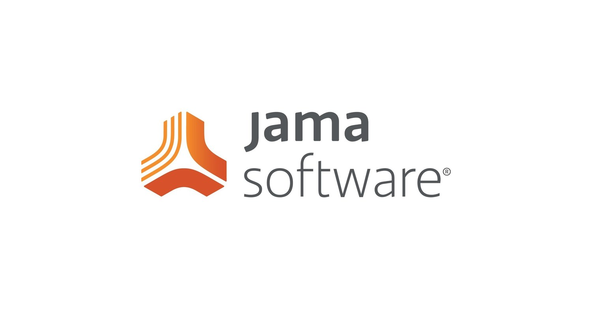

UPPERCASE TÖÖVAHENDID
UpperCASE töövahendid laiemalt öeldud on töövahendid, mida kasutatakse projektide alguses nõuete analüüsimiseks, süsteemi modelleerimiseks ja kõrgetasemeliseks projekteerimiseks.
Nõuete modeleerimine --
Diagrammi tugi --
Modelleerimiskeeled --
Töövahendid jaotatakse järgnevateks:
Töövahendid tarkvaranõuete hõivamiseks, korraldamiseks ja visualiseerimiseks, kasutades selliseid tehnikaid nagu kasutusjuhtude diagrammid ja olemi-suhete diagrammid. Populaarsed töövahendid sealhulgas on töövahendid nagu Jama, Jira ja Modern requirements.
Toetus erinevate diagrammide, sealhulgas andmevoo diagrammide, olemi-suhete diagrammide ja olekute ülemineku diagrammide koostamiseks. draw.io, Figma ja Miro on näited diagrammi loomise töövahenditest.
Toetus erinevate diagrammide, sealhulgas andmevoo diagrammide, olemi-suhete diagrammide ja olekute ülemineku diagrammide koostamiseks. Paar näidet on Astah, EdrawMax ja Adobe Express
Näited:
Isiklikult antud tööriistadest olen kasutanud Adobe Expressi, Jira ja draw.io. aga siin on paar näidet töövahenditest, mida ma ei ole kasutanud.
Jama Software on ettevõte, mis pakub tarkvaraplatvormi nimega Jama Connect. See platvorm on loodud selleks, et aidata organisatsioonidel hallata ja parandada oma toodete kvaliteeti ning seda kasutatakse järgnevatel põhjustel:
Nõuete haldusel:
Jälgitavuse jaoks:
Koostööks:
Riskide halduseks:
Testide halduseks:
Vastavuseks:
Nõuete loomist, haldamist ja jälgimist saab terve arendusprotsessi ajal korraldada.
Nõute testide riskide ja muude artefaktide seostamine vastutuse ja järjepidevuse tagamiseks.
Koostöö hõlbustamiseks erinevate meeskondade jaoks koos reaalajas värskenduste ja teavitustega.
Tuvastada, hinnata ja leevendada riske toodete kvaliteedi ja ohutuse osas.
Testijuhtumite läbi planeerimine, läbi viimine ja jälgimine toote funktsionaalsuse kontrollimiseks.
Mallide ja töövoogude töövahenditega tööstusstandardite vastavuse jälgimiseks ja kontrollimiseks.
Jama software tarkvara võimalustest on pikemalt räägitud järgnevas viites.
EdrawMax on võimas ja kasutajasõbralik diagrammide koostamise tarkvara, mis võimaldab luua erinevaid visuaalseid esitusi nagu vooskeeme, mõttekaarte, organisatsioonitabeleid, võrgudiagramme, põrandaplaane jne.
Antud link näitab, kuidas töövahendit kasutada ja milleks see võimeline on. Nende veebisaidis on kirjas täpsemalt, kuidas nende töövahend töötab ning kodulehel on lihtsamalt nähtavad visuaalsed näiteid tööriistast.